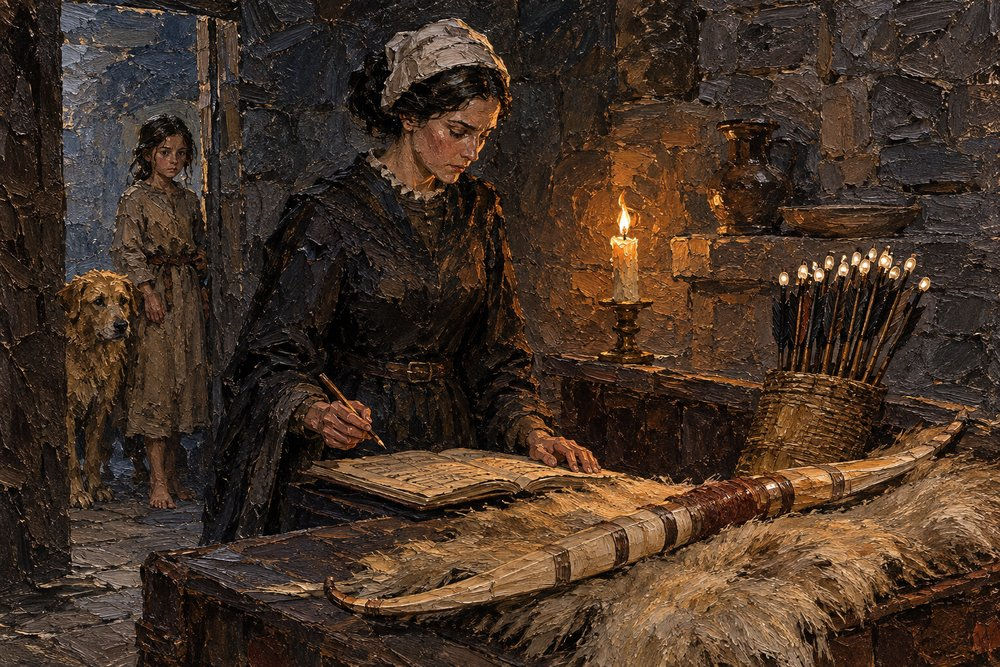

Record 3 of 14
Asked a little, given a little
That night, by one candle and not two, Ketevan opens her ledger and writes under the day’s date: Rain. One afternoon, four terraces. Asked: a little. Given: a little. Then she rules a fourth column, heads it Taken from, and leaves it empty, because she does not yet know whose account the rain has left.
By the light of a single candle in a stone room, a dark-haired woman in a white cap and a black dress bends over an open ledger on a chest and writes with a pencil; a pale recurve bow lies across a shaggy fleece at the front of the chest beside a woven basket of arrows with glowing white nocks, and in a doorway at the left a barefoot girl in a plain tunic stands beside a golden dog, looking in.